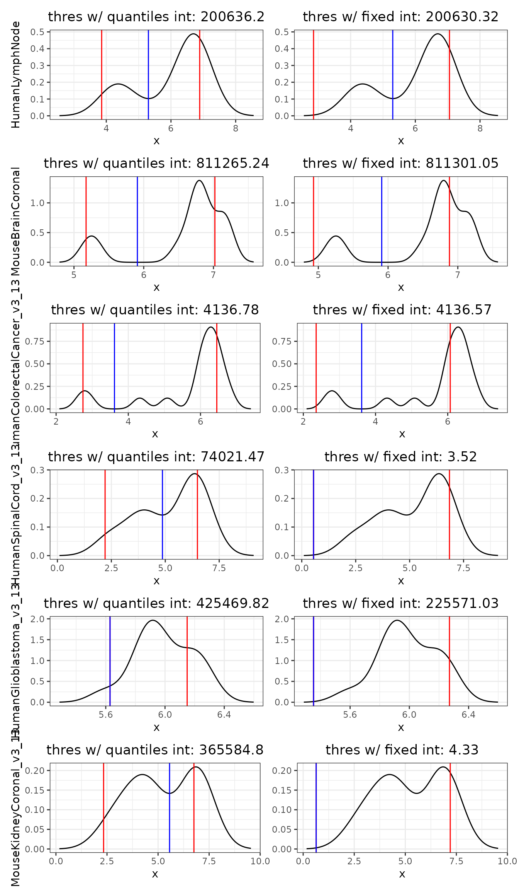
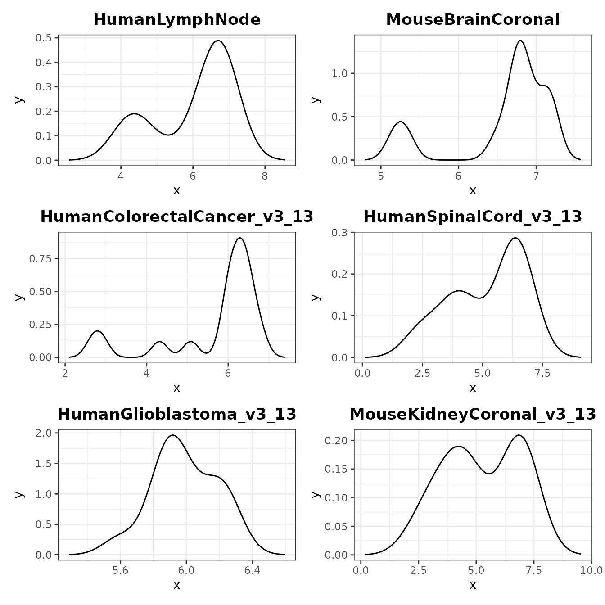

ThresholdTests
ThresholdTests.RmdTest different strategies to automatically detect a threshold for filtering
library(SpotGraphs)
library(dplyr)
library(stringr)
library(tidyr)
library(ggplot2)
library(viridis)
library(patchwork)Load several datasets to get a survey of potential cluster_nCount distributions
# retrieve data from TENxVisium
eh = ExperimentHub::ExperimentHub()
q = AnnotationHub::query(eh, 'TENxVisium')
ds.names = c('HumanLymphNode',
'MouseBrainCoronal',
'HumanColorectalCancer_v3.13',
'HumanSpinalCord_v3.13',
'HumanGlioblastoma_v3.13',
'MouseKidneyCoronal_v3.13')
id = q$ah_id[q$title %in% ds.names]
spe.ls = lapply(id, function(ds.id) eh[[ds.id]])
names(spe.ls) = ds.names %>% str_replace('\\.', '_')Use CleanSlide to get cluster_nCounts
spe.ls = lapply(spe.ls, function(spe) {
colData(spe)$nCount = colSums(assay(spe))
return(spe)
})
res.ls = lapply(spe.ls, function(spe) {
coord = SpatialExperiment::spatialCoords(spe) %>% as.data.frame()
colnames(coord) = c('x', 'y')
CleanSlide(coord = coord, nCount = spe$nCount)
})Define a function to plot nCounts on tissue image
ImageFeature = function(obj, feature = 'nCount', label = F) {
# First, scale the x,y coordinates to fit the low-res H&E image
lowres_scale <- imgData(obj)[imgData(obj)$image_id == 'lowres', 'scaleFactor']
coord.xy = SpatialExperiment::spatialCoords(obj) %>% as.data.frame()
coord.xy$x_axis <- coord.xy$pxl_row_in_fullres * lowres_scale
coord.xy$y_axis <- coord.xy$pxl_col_in_fullres * lowres_scale
# Flip the y-axis
coord.xy$y_axis <- abs(coord.xy$y_axis - (ncol(imgRaster(obj)) + 1))
# Get metadata feature from object
coord.xy[,feature] = colData(obj)[,feature]
# Create plot of transcripts per spot overlaid ontop of H&E
plt = ggplot(mapping = aes(1:600, 1:600)) +
annotation_raster(imgRaster(obj),
xmin = 1, xmax = 600,
ymin = 1, ymax = 600) +
geom_point(data=coord.xy, alpha=0.5, size = 0.5,
aes_string(x='x_axis', y='y_axis', color=feature)) +
scale_color_viridis(option = 'turbo', name = feature) +
coord_cartesian(xlim = c(1,600),
ylim = c(1,600)) +
coord_fixed() +
theme_void()
if (label) {
df.labels = coord.xy %>%
reframe(.by = all_of(feature),
x_axis = mean(x_axis),
y_axis = mean(y_axis))
plt = plt +
geom_label(data = df.labels,
size = 3,
aes_string(x='x_axis',
y='y_axis',
label = feature,
color=feature))
}
return(plt)
}Plot spotgraph cluster nCounts on tissue images
plt.ncount = lapply(names(spe.ls), function(ds.name) {
ImageFeature(spe.ls[[ds.name]], feature = 'cluster_nCount', label = T) +
ggtitle(ds.name) +
theme(plot.title = element_text(hjust = 0.5, face = 'bold'),
legend.position = 'none',
plot.margin = margin(rep(0.75,4),'cm'))
})
wrap_plots(plt.ncount, ncol = 2)
Calculate intervals with various strategies
# get count densities of each slide
den.ls = lapply(res.ls, function(res) {
nCount = unique(res$cluster_nCount)
den = density(log10(nCount))
return(den)
})
# calculate different thresholds for each slide
plt.tests = list()
thres.perc.ls = list()
thres.fixed.ls = list()
for (ds.name in names(den.ls)) {
den = den.ls[[ds.name]]
# quantile window
int.perc = c(spatstat.univar::quantile.density(den, 0.05),
spatstat.univar::quantile.density(den, 0.75))
thres.perc.ls[[ds.name]] = approxfun(den$x, den$y) %>% optimise(interval=int.perc)
thres.perc.ls[[ds.name]] = 10^(thres.perc.ls[[ds.name]]$minimum)
# fixed window
int.fixed = c(quantile(den$x, 0.05), quantile(den$x, 0.75))
thres.fixed.ls[[ds.name]] = approxfun(den$x, den$y) %>% optimise(interval=int.fixed)
thres.fixed.ls[[ds.name]] = 10^(thres.fixed.ls[[ds.name]]$minimum)
# create data frame for plotting
df = data.frame(x = den$x, y = den$y)
# create plots
plt.base = ggplot(df, aes(x = x, y = y)) +
geom_line() +
theme_bw() +
theme(plot.title = element_text(hjust = 0.5))
plt.perc = plt.base +
geom_vline(xintercept = int.perc, color = 'red') +
geom_vline(xintercept = log10(thres.perc.ls[[ds.name]]), color = 'blue') +
ylab(ds.name) +
ggtitle(
label = paste('thres w/ quantiles int:',
round(thres.perc.ls[[ds.name]], 2))
)
plt.fixed = plt.base +
geom_vline(xintercept = int.fixed, color = 'red') +
geom_vline(xintercept = log10(thres.fixed.ls[[ds.name]]), color = 'blue') +
ggtitle(
label = paste('thres w/ fixed int:',
round(thres.fixed.ls[[ds.name]], 2))
) +
theme(axis.title.y = element_blank())
plt.tests[[ds.name]] = wrap_plots(plt.perc, plt.fixed)
# rm(plt.base, plt.perc, plt.fixed, int.perc, int.fixed, df)
}
wrap_plots(plt.tests, ncol = 1)
Plot which spots would be filtered out with each threshold
# add thresholds to each SpatialExperiment object
for (ds.name in names(spe.ls)) {
thres.perc = spe.ls[[ds.name]]$cluster_nCount > thres.perc.ls[[ds.name]]
thres.fixed = spe.ls[[ds.name]]$cluster_nCount > thres.fixed.ls[[ds.name]]
spe.ls[[ds.name]]$threshold.perc = thres.perc %>%
ifelse('pass', 'nopass') %>%
factor(levels = c('nopass', 'pass'))
spe.ls[[ds.name]]$threshold.fixed = thres.fixed %>%
ifelse('pass', 'nopass') %>%
factor(levels = c('nopass', 'pass'))
rm(thres.perc, thres.fixed)
}
# create plots
plt.thresholds = lapply(names(spe.ls), function(ds.name) {
plt1 = ImageFeature(spe.ls[[ds.name]], feature = 'threshold.perc', label = F) +
scale_color_manual(values = c('red', 'grey'), drop = F) +
ggtitle(ds.name) +
theme(plot.title = element_text(hjust = 0.5, face = 'bold'),
legend.position = 'none',
plot.margin = margin(rep(0.75,4),'cm'))
plt2 = ImageFeature(spe.ls[[ds.name]], feature = 'threshold.fixed', label = F) +
scale_color_manual(values = c('red', 'grey'), drop = F) +
ggtitle(ds.name) +
theme(plot.title = element_text(hjust = 0.5, face = 'bold'),
legend.position = 'none',
plot.margin = margin(rep(0.75,4),'cm'))
return(wrap_plots(plt1, plt2, ncol = 2))
})
wrap_plots(plt.thresholds, ncol = 1)